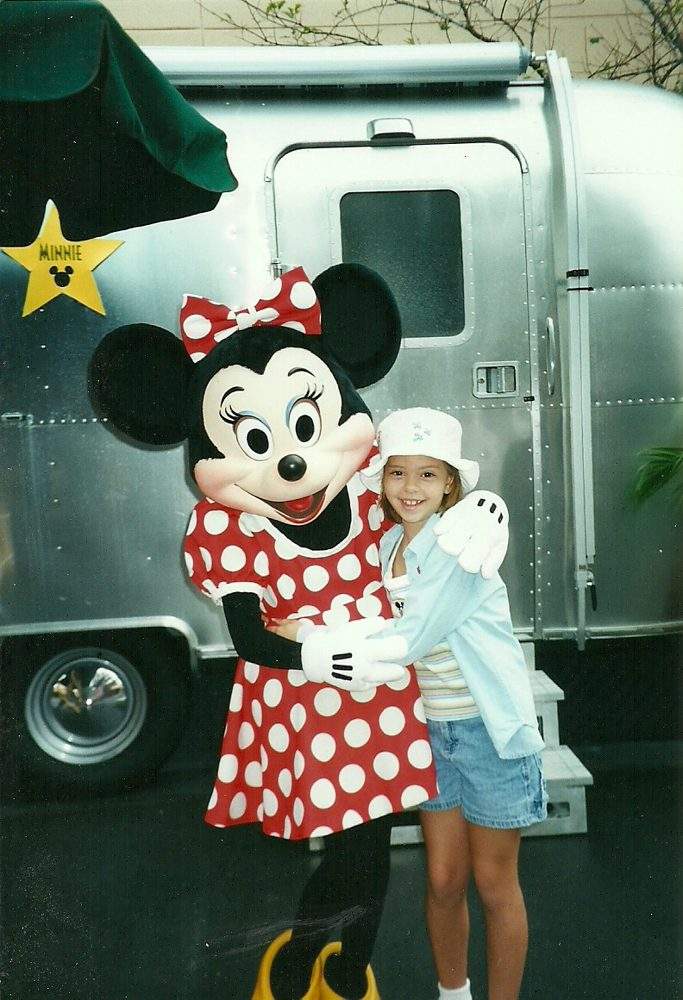
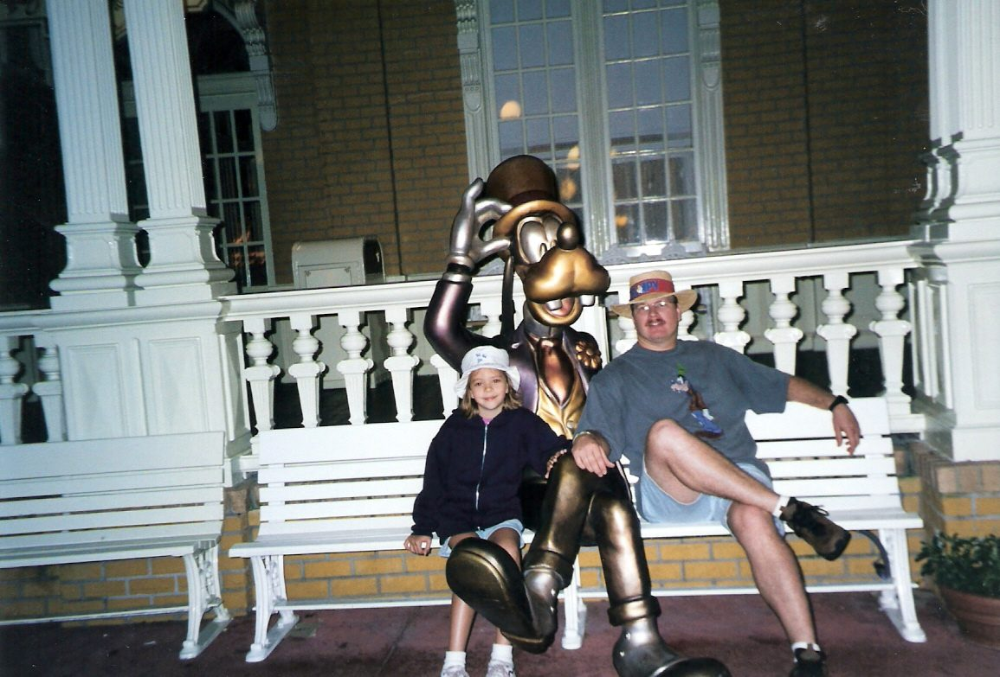
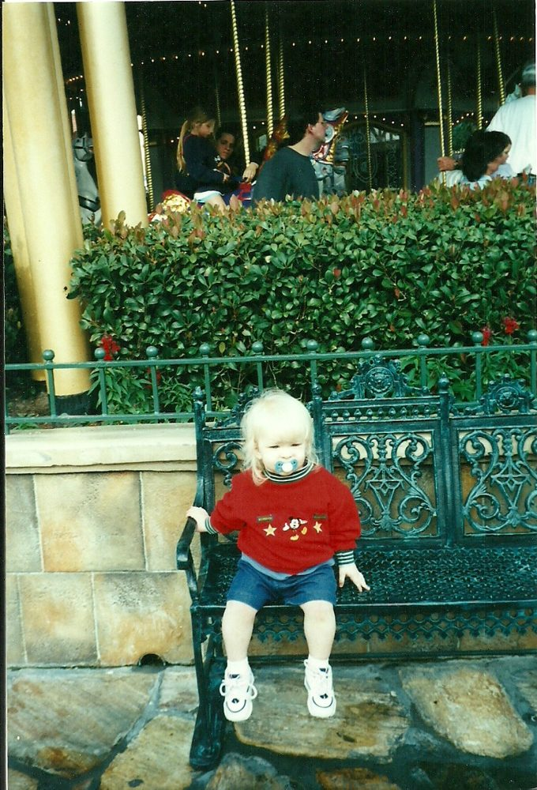
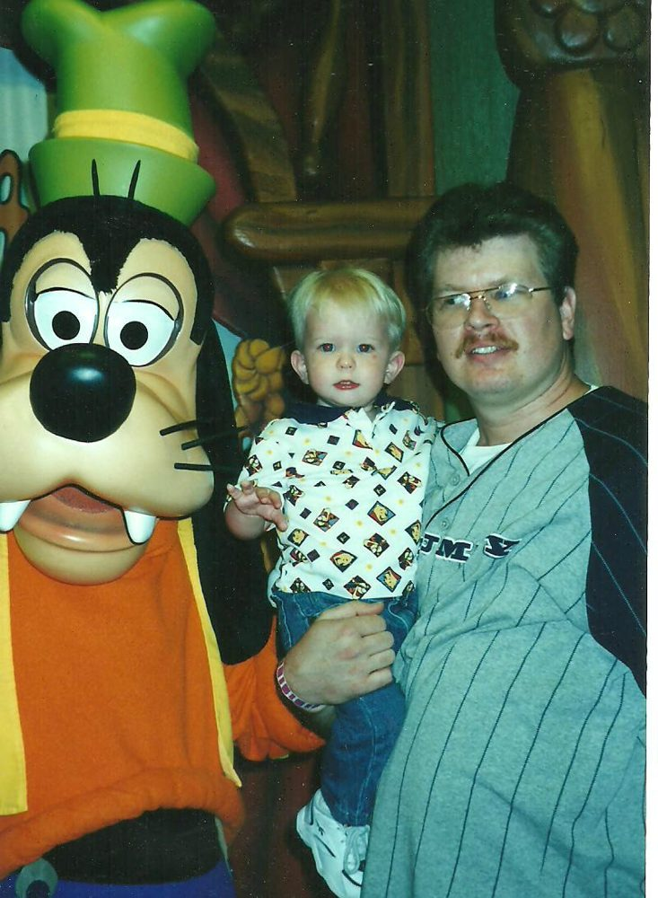
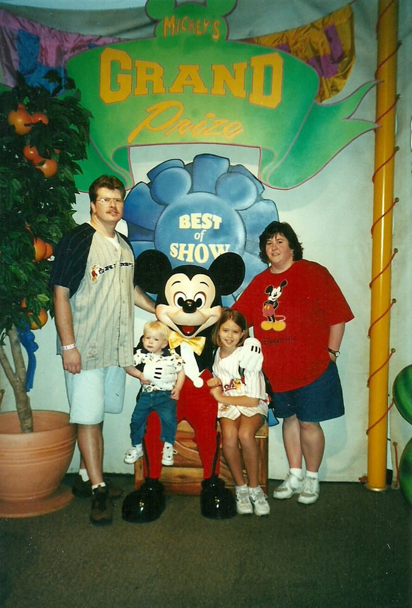

Disney Trip Report January 2001 - Owen’s 1st Disney Trip!!
Source: 2001 owen's 1st trip.doc
Disney Trip Report January 2001 Owen’s 1st Disney Trip!!
Alan 31 (very close to 32) Lisa 30 (very very close to 31) Olivia 11 Owen 18 months!
This will be Owen’s 1st trip to Disney! We are very excited about this! The trip came about because Alan had to attend a Convention in Disney World at the Coronado Springs Resort and we would be gone about 8 nights none of which we had to pay for! I think this was the 1st time all 4 of us had taken a business trip with Alan before. We have done it with just the 3 of us but this was the 1st one that included Owen. Actually it was the 1st vacation ever with Owen! Alan told me that we didn’t have to stay at the same resort as the convention and that made my day! The Coronado Springs Resort is pretty but it is also huge and spread out. Plus it is one of Disney’s moderate resorts. Alan said that my limit was I had to keep it under $200.00 per night! I immediately thought of the Polynesian hotel which is my favorite! However, the rates were too high. As I searched and planned it looked like we were going to be stuck with a moderate resort which is really not a bad thing but with a budget of $200 I didn’t want to stay somewhere that was only $120 a night. The deluxe resorts were around $250 a night though.
With some serious time spent researching a place to stay I saw that a lot of people were getting the Poly for $189 a night and was excited since that would work for us but the only way to get that rate was to have an Annual Pass since it was an AP rate! Then when I sat and planned things out more and figured up a budget for the trip I realized that since we would be flying for free, staying for free and Alan’s meals would all be paid for and also Owen’s meals would all be free (since he was just a baby they don’t charge for him) this meant all we had to pay for were our park passes! Well since we would be there for 8 nights and with Alan gone some days for work I figured we would want as many park days as we could get so that me and the kids wouldn’t have to sit around bored on the days Alan was busy. Plus then on his days he is free we will want to go to the parks together then too! Also we would be doing the parks with an 18 month old so that means we will need afternoon breaks and not having to worry about wasting a day on our passes would be a good thing! So I decided it we would buy AP’s. We only needed 3 since Owen doesn’t need a pass and we got Olivia a child pass even though the cut off for kids is age 9 we have always just deducted 2 years from her age when we go so that it is cheaper and luckily she is just an average size kid and could have passed as either age.
I was very happy with this so I called and booked the Poly with the AP rate of $189 plus tax! This would also mean that we were staying at a monorail resort and that would make going to the parks so much easier without Alan! I won’t have to try to carry Owen and the diaper bag and stroller onto a bus I can just load the stroller in the room and then wheel him right onto the monorail! One other thing is lets not forget that this means we can go back again sometime in the next 12 months with these passes!
Since this trip would be so close after X-mas we decided to spend a little less on gifts for the kids and that was really easy with Owen since he was so young. We also added little things to their stockings for the trip. Another thing we were holding off on was giving Owen his 1st haircut! He had those long super blonde actually white curls and could have passed as a girl or a boy! But we wanted to take him to the barber shop in the Magic Kingdom since they make such a big deal out of the 1st haircut and give the cute mouse ears to. The strange thing is that when looking at the trip photos it looks like Owen grew by at least 6 months during our trip since he looked like such a baby still until they cut his hair and then he really looked like a toddler! More on the haircut later. So X-mas came and went and we were all ready to go! Our trip dates were Jan. 11th-19th. Wed. Jan. 11th 2001
We left home at 2:45pm and got to the airport at 5:00pm Owen slept in the car for about an hour and a half! This was actually not good news since we wanted him to be tired on the plane. However we got checked in and went to the food court for dinner. We had Burger King and Chinese food and then we let Owen walk all around the airport till it was closer to boarding time. After the long car ride we wanted him to wear himself out and burn off some energy! I made one last diaper change before we boarded because I REFUSE to change a diaper on the plane no matter what! We arrived in Orlando on time while the kids and I sat at the luggage carousel Alan went out and got the rental car. This was not a lot of fun controlling Owen who was all wound up after the flight and I also had all the carryon luggage! Thank God for Olivia who helped me with all of this while we also pulled our luggage off as it came around. As we were doing all of this without Alan I realized that it was really stupid and we were not in that big of a hurry so he should have stayed here to help.
Well it turns out he was having trouble of his own. We were supposed to get a minivan but they didn’t have any left! He was gone forever and we had all the luggage in a pile with all the carry on items and the kids and we were waiting for him! FINALLY he showed up all frazzled and acting like he had been through the worst 30-45 minutes of his life which is odd because that's what I was thinking about myself! He had the attitude like he thought I had gotten off easy with just waiting for the luggage what is so hard about that????????? Jeez!

Anyway we got the van all loaded up and spent a good amount of time trying to get Owens car seat strapped in this was stressing Alan out quite a bit! Now I must say that this was prior to Sept.11th so when he got the rental van he was able to just pull right up to the door where we were waiting and had Olivia jump in the back seat and hold Owen while we loaded luggage and then strapped the seat in. You can’t do that any more since you aren’t allowed to drive up by the door for drop off and pick ups anymore.
Well we are off! Yeah, we get to leave the airport! We were spending the 1st night at the Fairfield inn by the airport because I didn’t want to arrive at the Poly at midnight and get some crappy room location! I had spent way to much time figuring out all the buildings at the Poly and I knew at midnight it would be slim pickings! So YES we loaded all that crap up just to drive to the airport Fairfield Inn! We arrive and Alan goes in to check us in and guess what? They don’t have our room! WHAT!!! Well he got it all figured out and I wasn’t there to witness it but I’ll bet it wasn’t pretty! We are finally in the room at 11:30, got a pack and play crib for Owen and put him straight to bed but it was about 12:15 by then.
Thursday Jan. 12th 2001
He slept fine till 5:45 and woke up crying so I gave him some milk and he went back to sleep till 9:15! It was very loud in the hotel this morning with all the people opening and shutting doors in the halls etc but he slept right through that! We were all awake and just waiting for him to wake up. I even took a picture of him in sleeping in his crib. As soon as he was up we packed up, ate our free breakfast and left.
We stopped by a nearby mall to buy some Disney Dollars at the Disney Store! WHY?? I have no idea but that is what the notes say. Maybe we didn’t realize that we were heading to DISNEY WORLD where they sell and make those stupid dollars!? Very strange/stupid!
The weather was really nice. It was sunny and in the 70’s and warmed up close to 80 by the afternoon. We were not sure about the weather since we have never been to Orlando in Jan. before. We of course got lost on our way to the Poly! It wouldn’t be a family trip if we didn’t get lost. We parked at the Poly and then rode the monorail to the MK to buy our AP’s. They will let you book the trip without having an actual annual pass yet but you have to have one when you check in to the hotel. We took the boat back and walked around looking at the different hotel buildings making note of one certain room number that we defiantly didn’t want! It was right beside where the maids were dragging in and out there big laundry carts! Then we went back inside the Polynesian and got some lunch at Captain Cooks. Just fast food of chicken fingers and burgers. Then finally went and got checked in and guess what room they gave us? There are 847 rooms at this resort and the one we don’t want they give to us! So I made Alan go back and tell them we want a different room. After all this is why we stayed the night at the airport so we wouldn’t get stuck with a bad room!! Well Alan had to wait in line for 30 minutes to get waited on again and Owen was getting pretty wild and out of control in the lobby with all this waiting.
They switched our room and now we are in room 1011 in the Tahiti building. With all my research I knew that this room was really far away from the main building and it wasn’t one of the buildings I had wanted but we took it anyway since it was ready now. We went on to the room unloaded our luggage, then called for a crib and fridge to be delivered. Our room is on the ground floor, which is what we wanted so that Owen can go out there and play around a little. Well this is exactly what he did. He ran around in the grass and loved it. We made Olivia sit out there with him while we unpacked. We also had to call for more hangers. Everything we had called for arrived very fast.
Once we were done unpacking we changed Owens diaper and loaded up for MGM. We drove over at 3:00pm and Owen fell asleep in the car seat BEFORE we left the parking lot at the Poly!! We entered the park and saw the very end of the Mulan parade. Owen continued sleeping for another 20-30 minutes in his stroller.

Olivia and Alan went to ride Rock n Roller Coaster and I took Owen to see Bear in the Big Blue House. He was so cute dancing around with the other little kids. After the show we saw Eeyore and Piglet, these were his 1st characters and he wasn’t even scared.
We met back up with the others and went to the 50’s Prime Time Cafe for dinner. This was our 1st trip that we had really made very many reservations for meals. Since Alan’s meals were paid for by work and Owen was free it was just my meal and Olivia’s kids meal that we paid for! They sat us in a little room over to the side which only had 4 tables and only one had other people at it. Well the other people in our little room was a table of 2 teenage girls and the waiter seemed pretty busy flirting and chatting with them. He was fine though for a waiter in any other place but this place is supposed to be themed and he did not play along whatsoever!! Not one single thing was done and yet we could hear all the fun stuff happening in the main room, people laughing and carrying on! Alan and I had the meatloaf which I had heard wonderful things about online but we didn’t think it was that great. Olivia had a kids hamburger. She had asked for a Dr. Pepper and they said they didn’t have any and suggested a root beer so she said yes. Well when they brought the bill we found out that even though her kids meal was supposed to include the drink it didn't include root beer!! So the bill for her and I was $21.00. $13.00 for the meatloaf and I had water and then $5 for a kids meal that was supposed to include a drink so they charged her $2.25 for her root beer!! Now in the big scheme of things $2.25 isn’t something to get upset over but he shouldn’t have suggested it to her if it wasn’t included! We had also had an appetizer of fried cheese which was on Alan’s bill but it wasn’t the kind of fried cheese we were used to it was some fancy cheese and was gross but at least we didn’t have to pay for that!
We left and as we are walking out the park is now closed so it is empty! That was weird. We got to the car at 7pm and went to the premiere Disney outlet and bought………nothing!! Yep that's right I am shocked too! We also went to the KB toy store and bought Owen 2 balls to play with. We noticed at the outlet they had a lot of the WDW 2000 stuff was marked down but not very cheap. You would think it would be very cheap I mean who comes to Disney in Jan. 2001 and wants to by the stuff that says 2000 and millennium crap on it! They even had some of it not marked down at all. After leaving the outlet mall we drove over to Wal-mart. I bought myself 2 pairs of shorts since I hadn’t packed very many. I thought it would be cooler out but I was wrong. And we bought diapers, milk, juice and snacks for the room. We finally got back to the room at 9:30! We called home and unpacked everything. Owen was VERY wound up he had gotten his second wind! He was going strong till 11:30 at which point I had to rock him to sleep forcefully!! I laid him in his crib and went to bed right around midnight.
Friday Nov. 13th 2001 weather today high of 73 and windy
Owen woke up at 4:30 and then fell back to sleep thank GOD!! Alan woke him up getting ready for his class at 7:30 (alan was running late!) Then Owen woke Olivia up at 7:45. She said she didn’t want to do the cooking class we had signed her up for at the Grand Floridian (too shy to go alone with no other kids she knows!) She said she wanted to go to the parks instead. So they ate while I showered and got ready and we loaded up and left the room at 9am. We waited quite awhile for the monorail and then rode over to the Magic Kingdom. The first place we went was Fantasyland and rode Peter Pan, Pooh, Snow White, tea cups and the carousel twice without getting off! There were no lines for anything, just walk right on! That was great with Owen. After that we walked back and Olivia rode Barnstormer 3 times as a walk on while Owen and I watched. Then back to the tea cups one more time. He doesn’t seem to like any of the rides this morning he just lays his head on my shoulder and quietly whines! Well except for the carousel. We went back over by the barnstormer and let Owen play on the playground there for very small kids, he loved that. When we walked back through Fantasyland the wait times were mostly 15 or 20 mintes for all the things we had just walked right on earlier. We went ahead and rode It’s a Small World and then ate lunch next door at Pinocchio’s. I had a cheese burger & fries and large drink I was so thirsty, Olivia had a hot dog kids meal. ($11.30 total) Owen had fallen asleep in his stroller while we were in line to order and he slept through the whole thing.
After lunch we walked over to the back of the castle and watched the backside of the Holiday Castle show from inside the castle. We had a backside view but it was so fun because the characters that were waiting their turn would come over to us and they would also goof off for us. Owen was still asleep through all of this. He woke up right at the end, so we got him some lunch too.
We decided to leave the park for now and rode back to the Poly. (LOVE that monorail!!) We got back to the room at 12:30 and the kids played for about ah hour then we all laid down for a short nap from 1:30-2:00. We only slept for 35 minutes because some lady in the hall was yelling at her kids and woke both Owen and me up!! Olivia slept on though. I tried my forceful rocking with him but it didn’t work this time, he just wasn’t tired enough after his nap in the parks. Olivia however managed to sleep for another hour after we woke up and she is the one who didn’t want to nap! After her nap was over I made her sit in the room and do homework while I took Owen for a walk around the hotel grounds. We walked over by the pool and watched kids swim and we walked along by the beach area this resort is beautiful!! We were only gone about 30-40 minutes and then went back to check on her. She wanted to go swimming so Owen and I just watched while she swam for awhile. I knew since it was 4pm that she wouldn’t be able to swim long and I didn’t want to get all wet and have to redo my hair just for a very short swim. Plus I thought it would be too cold for Owen. Well she ended up swimming for an hour and as we were walking back to the room we ran into Alan along the way! We all got ready to go back over to MK tonight but they closed at 7pm so we had to hustle! By the time we entered the park we only had one hour and 15 minutes.
We got a fastpass for Buzz and I took Owen on the TTA while Alan and Olivia rode Astro Orbiters twice. We then rode Buzz with the FP’s. After that we went over and I rode Barnstormer with Olivia twice without getting off! Olivia then rode 3 more times till the park closed at 7pm. We took our time walking to the front of the park and then took the resort boat back to the hotel. By the time we got back it was already 7:50pm! Jeez. We all had on sweatshirts except Alan and he was cold on that boat! We ordered Pizza Hut and Alan went to go pick it up. It took him an hour!!!!! Idiot! I wanted to just order the room service pizza from the hotel but OH NO! he didn’t want to! So it was 9pm before we got our food! We were all starved and Owen was really wound up now. He had fallen asleep just as the park was closing at 7 and slept in the stroller as we left the park and on the boat so he had about a 45 minute nap in him. GREAT! Olivia and I finally got to sleep close to 11pm once we finally got Owen to sleep! (Super was free tonight since it was just pizza the company paid for it. that is why we just should have ordered from the hotel!)

Saturday Jan 14th 2001
Owen woke up 2 times in the middle of the night and he got up for good at 7:00 when Alan left for the class. So we got ready and went to the MK at 9:15. We went back to Big Thunder and Olivia rode once with about a 5-10 minute wait. Then we went and watched the Country Bear Jamboree, Owen LOVED this! After that we walked back over for another spin on the carousel and then got lunch at Casey’s. We got our hot dogs and fries and sat on a bench in front of the castle and ate while we watched the front side of the show from yesterday! A very rude French family were climbing all over around us driving us crazy! After the show we went over to the baby care center and changed a diaper and checked out the center. I had always sworn I would never come to Disney with a child still in diapers but wow those baby centers are nice! They have nice changing areas, rocking chairs, restrooms for the whole family, and play area for toddlers, and an area where you can buy overpriced diapers and baby food.
After our tour of the baby care center we went over to ride the TTA which had a LINE! This never has a line but it did and we noticed that Space Mountain was over an hour and Buzz was just at about 1 hour! WOW it’s a Saturday and I guess even if it is January Saturdays are always busy. So we went ahead and rode the TTA it did have a line but it was very fast moving about 5 minutes. Well guess what happened while we were riding it? Yep, Owen fell asleep on it. So I had to carry him off and down the down hill escalator thing to his stroller. We decided to leave the park for now but made a stop in the candy store on our way out. We also chose to just take the ferry boat over to the Poly this time since it is fairly close to where our building is.
Once we got to the room there was a maid cart blocking the room so we thought she was in there cleaning and we walked around the resort for 30 minutes waiting. We went back and entered the room and it turns out she hadn’t even been there yet!!! I was not happy! It was about 1:40 now and the kids played in the room till 2:45 and she still hadn’t shown up so we laid down for naps and Owen slept from 3-5!
Alan got back to the room just about 2-3 minutes after Owen woke up, very good timing. We all got ready and rode the monorail over to the Contemporary to our dinner at Chef Mickey’s. We had a reservation for 6:15pm. We were seated very quickly but had our picture taken 1st which we did end up buying. The food tasted so good after a few days of cheese burgers, hot dogs and pizza! Owen was in a fabulous mood after his long nap and he LOVED the characters! His favorites were Chip and Dale. After we ate we took the kids up front to see Goofy and Donald and Owen wanted Goofy to pick him up! (which the characters aren’t allowed to do!) So instead Goofy took Owen by the hand and walked him all through the whole restaurant and Owen went with him without so much as a look back at his parents!! It was the cutest thing ever! It looked like a Disney commercial and I got some of it on video. Then we went to see Donald and while he was waiting in line for his turn Owen got tired and just sat down right in the middle of the floor! Well Donald cam over and did the exact same thing and sat right beside him. So then Owen laid down and so Donald did the same thing too. Owen hopped up really fast and so did Donald! Donald continued imitating Owen for a few more minutes and everyone in the place was watching them! SO CUTE! We left there after defiantly getting our monies worth since we only paid for me and Olivia.
We walked over to the MK and saw the fireworks on our way over. Everyone in the MK was getting a spot for the light parade but we wanted to get Owen’s haircut in the barber shop. Well they close earlier in the day and we didn’t know that so instead we did some rides. We went over to the Jungle Cruise and then we took in another showing of the Country Bear Jamboree so Alan could see how much Owen loved it! After this we noticed that Owens jeans were wet!! In all of our excitement with dinner, the characters and then the fireworks we had forgotten to change his diaper!! We had a leak and we hadn’t brought a change of clothes for him in the small diaper bag since we were just out for the evening! We had to change him but his jeans were wet and we didn’t have anything to put on him! So since we were leaving the park we improvised! Olivia was wearing a T-shirt, sweatshirt and had a jacket tied around her waist, so I made her take off the sweatshirt and put her jacket on instead. Then she gave me the sweatshirt and I put Owens legs through the arm holes and wrapped the rest of it up around his waist and sat him back in his stroller! As long as he was sitting in the stroller you couldn’t tell what he was wearing plus it was dark out. Olivia thought this was the funniest thing she had ever seen another human being do in her life! And she also vowed to never wear that sweatshirt again! Well it worked and I was pretty proud of that Alan just shook his head like he thought I was crazy! We were made our way out of the park since even before the accident we had wanted to leave before the parade started so we didn’t get stuck in those crowds! Well we had been back in Frontierland and so by the time we start getting closer to the front of the park we find out the parade had already started so we were in major crowds and couldn’t even see the parade. We cut through some shops to make an escape and took the ferry boat back to the Poly. We got Owen back to the room and all cleaned up and changed into jimmies but he was WOUND up again till late tonight! What a full and fun day we had today!
Sunday Jan. 15th 2001
Hotel day! Alan got up and went to his class thing and the rest of us slept in till 8:30 and then stayed in bed watching cartoons till 9. We called home to check in and then got dressed and went to Captain Cooks for some breakfast. ($14) we even sat in there and ate instead of taking it back to the room but that place is too small and needs more space!

Back to the room and Owen played outside while I sat on the patio with him and Olivia did homework! Yuck! Then Alan called and said he got our early at 11:45! WooHoo! I took the kids to the pool and he got back, changed and met us there. We swam till about 1:30, then Olivia and Owen changed and he took her with him back over to the Coronado Resort to register for his convention. He had a class for 4 days and then a convention for 4 days but couldn’t register for that one till this afternoon. While they were gone Owen and I napped and he slept about an hour and a half. When we woke up Alan and Olivia were sitting outside on the patio waiting for us to wake up. Good thing we were on the 1st floor we got a lot more use out of that patio then we would have a balcony on this trip. They were bored and ready to go do something so we went over to Downtown Disney and then ate at Planet Hollywood which I don’t know why we bother doing! Olivia liked it since she is young enough to be impressed with that sort of thing but it is highly over rated! Then we drove all the way over to the Belz outlet mall only to find that they were closed! It was a Sunday evening and they had just closed at 6pm we hadn’t even thought of that! So instead we went and played mini-golf back at Disney over at the summerland/winterland beside Blizzard Beach.
Monday Jan. 16th 2001
This morning we all went over to the Magic Kingdom together and had breakfast at Crystal Palace with Pooh and friends at 9:30. After this we went over to the barber shop and got Owens 1st haircut! I took a lot of pictures and they gave him some bubbles to play with to try and keep him sitting still! He got his free Mickey Mouse ears that are embroidered with “baby’s 1st haircut” SO CUTE! After we were done with the haircut we went back out to main st. and they were doing something in front of the castle with the characters up on top of the train station so we watched that. Mostly they watched it while I took some more pictures of Owens haircut and Mickey ears. When we were done we went back to the hotel and Olivia and Alan rented a water mouse which is just a small little boat built to 2 and they zipped around the lake on that. While they did that Owen and I hung out on the beach at the Poly. He played in the sand and I took pictures. After this we all went back to the room and just relaxed for awhile.
Later that evening we had an early dinner at O’hana’s for 5:15. This was fun but Owen didn’t eat much! After dinner we drove back over to the Belz outlet mall for some more shopping.
Tuesday Jan. 17th 2001
Well I didn’t write any notes for today! Darn it I hate it when I don’t write down what we did! All it says is E-night! And I do know that we did the E-night at the MK and that Owen and Alan left 1st leaving Olivia and I to ride the rides by ourselves and have fun. I am not even sure Alan got an E-night ticket or if he just left right when it started and took Owen back to the room but I do know that Olivia and I spent most of the evening at the MK by ourselves and had a lot of fun! We rode our favorites over and over!
Wednesday Jan. 18th 2001
Woke up and some of us ate breakfast in the room and some of us didn’t eat at all. (that is all the notes say so who knows who ate or what it was?!) We drove over to Epcot so that when we were done we could head offsite for some stuff. We went and got FP’s for Test Track and then Alan and Olivia went to the Ice Station Cool and tried some gross sodas! We also went and sent some email postcards back home. Then at 11:30 we went to Canada for our lunch reservation and all my notes say about this is 2 thumbs down!!! That is SHOCKING information to me because I don’t remember it being bad and we always love that place it is one of the most popular places to eat in all of Disney World!! Wish I would have written down what we didn’t like about it!

After what was apparently a disappointing meal we went over to Mexico for a boat ride and to Norway for a voyage with the Vikings! We stopped by the baby care center to have a diaper change and boy the one at Epcot is really nice too! Then Alan and Olivia rode Test Track. It wasn’t there fast pass time but we didn’t want to wait around for it so they just went in the singles line and rode. Owen and I waited for them which took about a half an hour! Then we left the park and went to Eckards drug store for some supplies.
Back to the room for naps and swims! Owen and I stayed in the room so he could take a nap and Alan took Olivia to the pool. After our naps we drove over to Downtown Disney to look around and got Owen some McDonalds. Then we drove next door to the Port Orleans and had pizza. We had stayed here last year for a week and really liked it. That is the trip we took when Owen was only 4 months old and he stayed home with grandma! We sat outside for a little while and the kids played on the playground. As we drove back to the Poly we could see some of Illuminations going off!
Thursday Jan. 19th 2001
We had reservation for breakfast in the castle with Cinderella! We have never done this before and I got up very early in the morning 90 days before this to make the reservation! So we got up super early and went to the MK for early entry. We did all of Fantasyland and then the race cars and space mountain before we went to breakfast. Our server was not the greatest! He was a very snooty man who thought he was almost too good to be waiting on us! We all enjoyed this but Olivia really LOVED it! I felt a little bad for her because all of the princess’s were making over her little brother but she seemed to handle it well. She has great big smiles in all the pictures!
After breakfast we were planning to leave the park and before we got out of the castle area Owen was asleep in this stroller! He slept clear through all the way back to the room so when we got back and the rest of us wanted to nap after our early morning he was awake and wouldn’t let us! It was our last day to swim so we all got ready and while Alan and Owen walked around the resort Olivia did some homework at a table by the pool. Then we went for a swim after about an hour I took Owen to the room to take another nap since he was tired. We both fell asleep. When I woke up I found that Alan and Olivia had snuck into the room and were both sleeping on the other bed and were still in there swimsuits!! Hope they were dry! I can’t believe I didn’t wake up when they came in I must have been really tired. We woke up at 4pm and had to hurry to get ready for our dinner reservation. We were going back to Chef Mickey’s! When I was planning the trip I didn’t know what Alan’s exact schedule would be like so I wasn’t sure which night to make the Chef Mickey reservation so I made it for two different nights in case one wouldn’t work out. Well after we had so much fun there the other night we decided to go ahead and go to this too! Why not! We went over and got there right on time at 5:15 the character interaction was not nearly as much fun as it was the other night but you can’t get that kind of treatment every time! We also had a VERY loud family sitting beside us that made for a not so fun meal. After we were done we went outside to the giant rooftop area at the Contemporary hotel and watched the MK fireworks! What a great view.
We then headed over to the Fantasia Gardens mini-golf so we could try this course. Mini-golf at Disney is not quite like other places it is so pretty and cutely decorated. As we were finishing up playing we noticed that Owen had red spots all over him and we went back to the room. We kept and eye on him and they weren’t going away and were showing up all over him, they looked terrible! So we called the front desk and they gave us directions to the hospital in Celebration! We left the hotel at 9pm and went to the emergency room they checked him out and said he was having an allergic reaction to something! But there was no way of knowing what it was from. They were GREAT and gave him some stuff to make it better and sure enough it started clearing up. We got back to the hotel between 11:00-11:30! That was scary but let me say that it was one of the nicest hospitals I have ever seen! Of course it is located in Disney’s own town of Celebration with the most beautiful houses so what else would you expect!
Friday Jan. 20th 2001
Well we slept in till Owen woke us all up and then we packed up the room. Check out was supposed to be 11 but we got a late check out of 1pm. However, we did manage to get out of there a little after 12. We had to go to the drug store again and then we drove over to the Boardwalk and we were wanting to get Olivia’s hair wrapped but we walked all over and couldn’t find it anywhere! So we drove over to MGM and stayed from about 1-5pm Then on to the airport for our flight home! Today was the warmest day we had out of the whole trip it was close to 90 degrees! Figures after all those trips to the pool when it wasn’t really all that warm and today we are sweating!
Misc. This was a great trip! Those annual passes were great because we were able to leave the parks and take naps and not go from open till close because we knew we could come and go to the parks as often or as little as we wanted. We also didn’t feel like we were wasting the passes since they will get used on another trip in Nov. (and a girls only trip in March! That we knew nothing about yet!)
Loved staying at the Polynesian it has always been my favorite and we stayed there on Olivia’s 1st trip for 2 short nights with a GREAT holiday package! But with Olivia and I being on our own with an 18 month old it made it so much easier. No crowded buss’s to cram our way onto. It was fast and easy to get back to the room and also since we did spend a lot of time either in the room or at the resort it was a nice BIG room and a very nice resort to spend a lot of time at. It was like a tropical island. As I am reading the trip report a lot of it is about Owen and not as much was written about Olivia but she had a great time and she liked showing Disney World to her little brother. This trip was less about the rides and more about seeing how much Owen could handle but it was also nice to have a more relaxed trip and the low January crowds made that nice. Thankfully we didn’t have any cold Jan. weather! I know it seemed crazy to take such a young child to Disney but there were things that Owen did enjoy and we all enjoyed watching him explore. Since this trip came from all my note taking years ago except for this part I will add that it is so interesting and exciting and sad and happy all at the same time to knowing how Owens other trips in the future compare to his 1st time. He is now 6 years old and still loves going but now his favorites are riding Buzz and Splash Mountain! He can now go strong all day from open to close with no nap if he needs to and he is getting so big! But then when I look at Olivia and compare I realize that age 6 isn’t really so big after all because even at age 11 she was still just a little girl on this trip and now……. well not so much! Makes me sad to see this was our 1st big family vacation and to know that who knows when we will have our last. Part of me hopes that I don’t know when we take the last big family vacation that it actually is our last one just the 4 of us because I will be so sad knowing that. However, another part of me hopes that I know it so that I can savor every single moment of it! On the other hand I really try to savor every single day of every single trip. The time when we all have fun together or get lost or one of us (usually Owen) gets sick etc etc.. But also when it is just Olivia and I together or the times when it is just Owen and I together. No cell phones, no laptops, no internet, almost no TV, no bedroom doors closed! Just us!